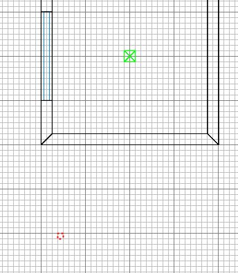
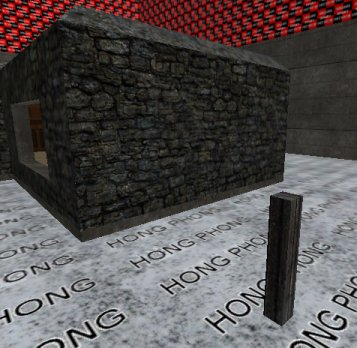
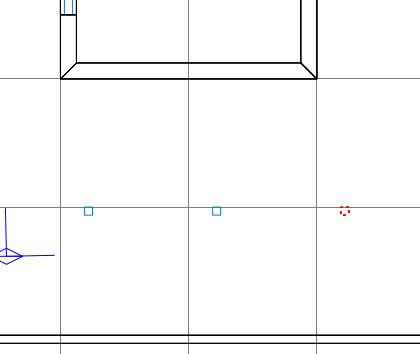
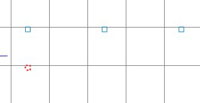
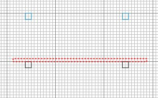
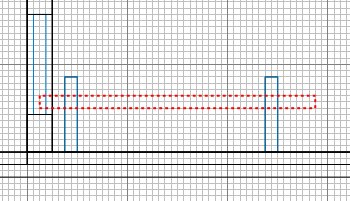
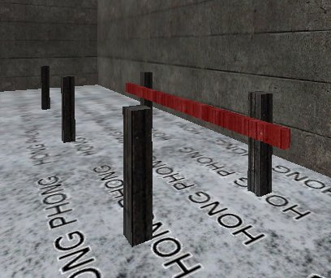
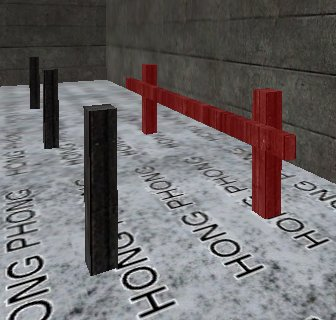

|
Run Radiant, open the map, and make a
fence post by drawing a box as shown.

Ctrl+tab so we can control the height of
the fence post and ensure it stands on the
ground. Caulk it of course too.
Press ESC.
Apply some wood texture to the 5 visible
faces.

Select the fence brush, then in 2D,
right-click and select Make Detail.
Select it again, and again right-click,
but this time choose
func/func_explosive. Press N.
Close the window and press N again.
Tick UseShader box. Enter key
"health" and value "100"
and press return. A bullet does around
15 damage. Grenades do 200, and
panzers do 400.
Enter key "type" and value
"wood" and press return.
Close entities window.
Press 8 and duplicate the fence post,
then move it into line as shown below.
Duplicate it again to make a third one in
line.

Press 7, and duplicate to make another
fence post which we'll do something
different with.

Right click in 2D and select Ungroup
Entity. This returns the brush to an
ordinary thing instead of an explosive one.
Duplicate the post. Press ESC.
Use grid scale 3 to create the linking
fence plank as shown (this time allow wood
texture to remain on this - do not caulk).

Ctrl+tab to see how tall the brush is,
and make it fence bar size.
Right-click and Make Detail the bar.
Select the brush again.


Then select the upright posts so that you
have all 3 brushes selected.

Then in 2D, right click and select
func/func_explosive. Again Press
N. Tick UseShader. Put the
cursor on the word "wood" in the
value box and press return. This is a
quick way to set the same value as used
earlier. Also
put "health" in the key and say
"150" in the value and press
return. Press ESC.
We now have 3 standalone posts that can
be destroyed individually - and a fence that
when destroyed, all 3 components go up
together.
This is to illustrate that you can make a
single explosive entity out of any
collection of brushes (but not of models)
and that you mustn't
create something that might have its upright
posts destroyed, but leave the crossbar
intact floating in the air! This why
you'll often notice that crossbars can be
destroyed, but their posts cannot (eg
Fueldump near the tank start).
Save, compile and go shoot some planks :)
|